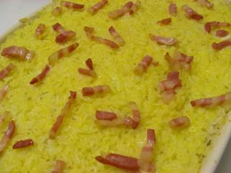

Arroz de pato

Description
Arroz de Pato is a easy and tasty meal to do, that even you can do it.
Ingredients
- 1/2 pato cozido em água e sal, que deve ser depois desfiado
- 1 malga bem cheia de arroz
- 2 e 1/2 medidas da água onde cozeu o pato
- 1 cebola grande bem picada
- 2 folhas de louro
- 100 gr de bacon em cubos
- 3 dentes de alho picados
- 1 cravinho
- pimenta e noz moscada q.b.
- azeite q.b.
- vinho branco a gosto
- 50 gr de bacon em cubinhos
- 1 ovo bem batido
- 2 laranjas às rodelas para acompanhar
Steps
- Começar por cozer o pato em água e sal.
- Levar o arroz a cozer na água de cozer o pato.
- Provar e rectificar o sal, se for necessário.
- Entretanto preparar o refogado, levando a cebola, os alhos, o louro, o cravinho e o bacon numa frigideira com um pouco de azeite.
- Deixar cozinhar até a cebola ficar transparente, mexendo de vez em quando.
- Desfiar bem o pato e juntar ao refogado, temperando com pimenta e noz moscada e juntando um pouco de vinho branco. Deixar cozinhar alguns minutos.
- Para o passo final colocar metade do arroz num tabuleiro de ir ao forno, juntar o refogado com o pato, e cobrir com o restante arroz.
- Pincelar com ovo batido e "salpicar" com bacon. Levar ao forno para cozinhar o ovo.
- Servir com rodelas de laranja.